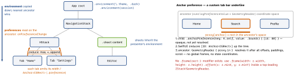

swiftui · folio
In one line: Two implicit channels through the view tree: the environment flows down
(an ancestor sets a value, every descendant can read it), preferences flow up (descendants
emit values, SwiftUI reduces them, an ancestor reads the result). Explicit
init parameters remain the default for a view’s own data.
Download PDF Print view LaTeX source


Down
EnvironmentValues— value-typed bag keyed byEnvironmentKeytypes. Read@Environment(\.colorScheme); set.environment(\.key, v); augment the inherited value with.transformEnvironment.- Custom key: type with
static let defaultValue+ computed property onEnvironmentValuesoverself[Key.self].@Entry(Xcode 16) writes both. A keyed read never crashes — it falls back todefaultValue. - Objects:
ObservableObject→.environmentObject(o)+@EnvironmentObject(any@Publishedinvalidates every reader).@Observable(iOS 17) →.environment(o)+@Environment(Session.self): per-property tracking. Missing object = runtime crash; type itSession?to make it optional. - Re-render: only views whose
bodyreads the changed value — read churny values low. - DI:
@Entry var api: APIClient = .live; previews/tests inject.mock. Ambient concerns only; the item a view shows stays ininit.
Up
PreferenceKey:defaultValue+reduce(value: inout V, nextValue: () -> V). Emit.preference(key:value:); read.onPreferenceChange(Equatable), or build UI withoverlayPreferenceValue/backgroundPreferenceValue.reducefolds siblings in tree order; non-emitting views may contributedefaultValue, so it must be the identity ofreduce(0 for max,[]for append). Only descendants below the reader are aggregated.- Uses: equal-width labels, child size (
GeometryReaderin.background— no layout effect), scroll offset, custom tab bars, tooltips, connector lines.
Example — custom key + child-size preference
extension EnvironmentValues { @Entry var theme: Theme = .light }
struct MaxWidth: PreferenceKey {
static let defaultValue: CGFloat = 0 // identity of max
static func reduce(value: inout CGFloat,
nextValue: () -> CGFloat) {
value = max(value, nextValue()) } }
Text(label).background(GeometryReader { g in Color.clear
.preference(key: MaxWidth.self, value: g.size.width) })
.onPreferenceChange(MaxWidth.self) { w in // on the ancestor
if w != labelWidth { labelWidth = w } } // only on changeTraps
- Not injected:
@EnvironmentObject/ non-optional@Environment(T.self)compiles, then crashes at render. Culprits:#Preview, a newUIHostingController(fresh environment), injecting on a sibling branch or inside aNavigationLinkdestination. - Down only — a modifier below the reader is invisible to it; inject at a common ancestor.
- Reference type in an
EnvironmentKey: mutating its insides invalidates nobody. Keys = immutable config (theme, formatter, flags, clients); mutable shared state =@Observable. - Preference loop: size →
@State→ child resizes → new size… “Bound preference …tried to update multiple times per frame”(unverified). Store only on change, measure in.background; newer SDKs:onGeometryChange. reducethat overwrites (value = nextValue()) or ignoresnextValue()keeps one child.- Swift 6:
static var defaultValueis global mutable state — usestatic let. \.dismissin a root with no presenter is a silent no-op.
Choosing the channel
| the view’s own data | init param / @Binding |
| ambient config, services | EnvironmentKey / @Entry |
| shared mutable model | @Observable + .environment(obj) |
| child → parent value | PreferenceKey + onPreferenceChange |
| child rect for drawing | anchorPreference + overlayPreferenceValue |